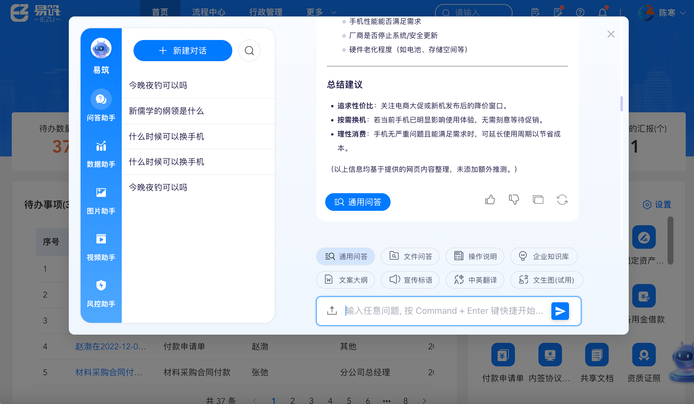
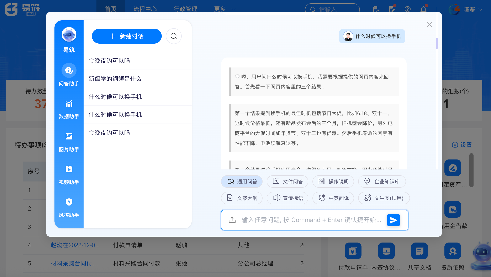
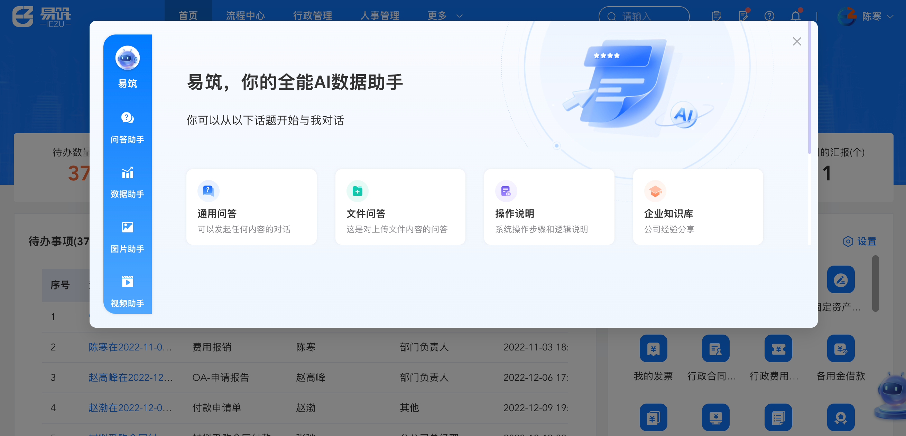
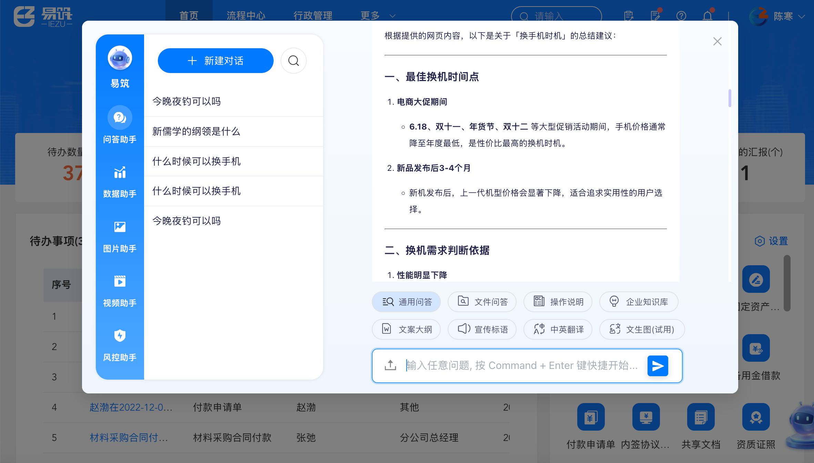
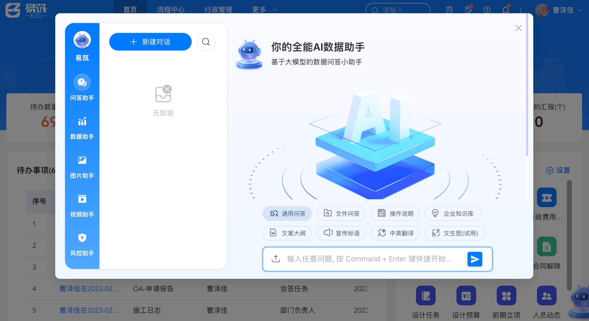
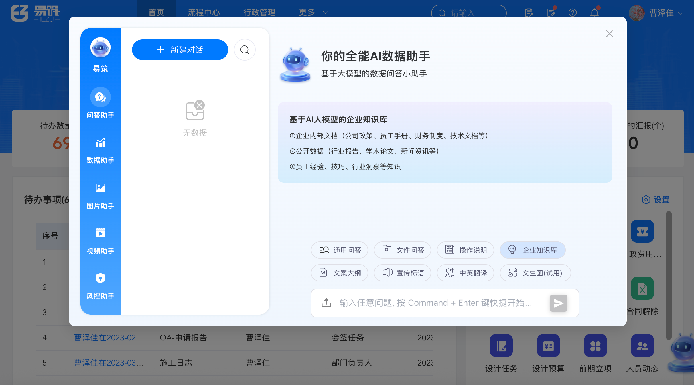
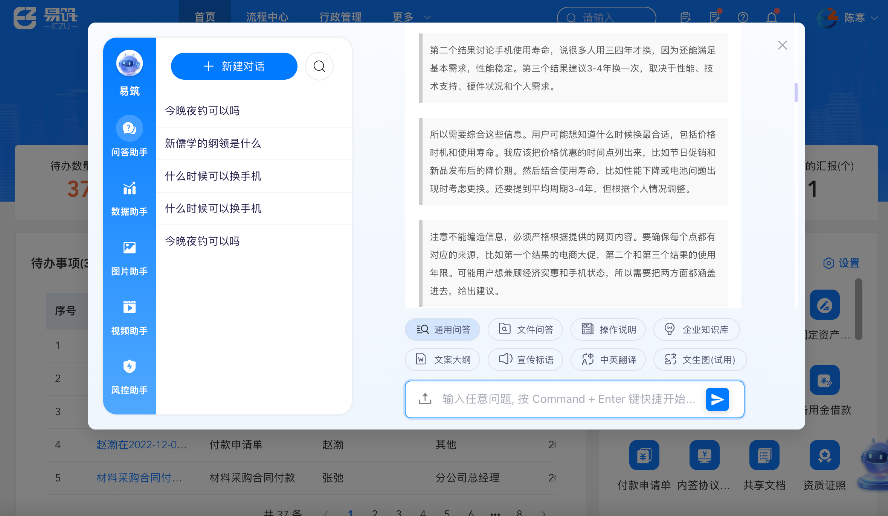

易筑智能助手 Evo AI Assistant
面向建筑工程行业的 AI 智能助手，深度嵌入易筑 Evo 企业管理系统， 基于 RAG 技术为 200+ 功能模块提供自然语言问答、深度链接跳转和多步骤流程引导。
01 问题与背景
易筑 Evo 是一套覆盖营销、设计、施工、行政、人事、财务、资产等 200+ 功能模块的综合性企业管理系统。随着系统功能持续丰富，用户面临严峻挑战：
- 学习成本高 — 新员工需数周熟悉系统，培训依赖老员工传帮带
- 操作效率低 — 跨部门流程需打开多个页面，频繁切换查找功能入口
- 知识分散 — 操作手册、制度发文、公告、培训资料分散各处
- 问题重复 — 客服团队每周 50+ 同类操作问题重复解答
02 产品目标
03 核心功能
🗣️ 核心问答
用户用自然语言提问操作问题，AI 秒级响应并附带深度链接直达功能页面。
用户：怎么申请出差？
AI：我来帮您分步骤完成出差申请 👇
① 进入行政门户 → [去行政门户]
② 发起出差申请 → [去新建出差申请]
③ 填写申请表单（事由/天数/目的地/费用）
④ 等待审批 → [查看审批状态]
🧭 智能引导
AI 分步骤引导用户完成跨部门流程，上下文感知当前页面提供精准帮助。
📚 知识管理
管理员后台管理知识库文档，支持批量上传操作手册、制度文档，查看用户常见问题统计。
🔄 人机协作
用户可对回答反馈"有用/无用"，不准确时可一键转人工客服并附带对话上下文。
📊 数据查询与图表
NL2SQL 能力支持自然语言查询业务数据："上季度营销立项有多少？"，并生成 ECharts 图表。
首字响应 < 3s
流式输出 + 缓存高频问题，用户体验流畅
深度链接跳转
AI 回答中附带可点击链接，一键到达操作位置
字段级 AI 帮助
填表单时遇到不懂的字段可直接问 AI
主动提醒
合同到期、证书到期等关键节点主动推送
04 项目截图







05 技术架构
接口设计
| 接口 | 方法 | 说明 |
|---|---|---|
| /chat-messages | POST | 发送用户消息，接收 AI 回复 |
| /feedback | POST | 用户对回答进行反馈 |
| /conversation/history | GET | 获取对话历史 |
| /documents/upload | POST | 上传知识库文档 |
| /search/related | POST | 根据当前页面推荐相关问题 |
06 迭代路线图
MVP · 6周
✅ 核心问答链路跑通
对话服务搭建（RAG） · 知识库构建 · 全局浮窗入口 · 深度链接跳转 · 基础问答统计
增强 · 4周
上下文感知 & 反馈闭环
上下文感知（当前页面→快捷提问） · 多步骤流程引导 · 用户反馈机制 · 知识库管理后台 · 运营数据看板
智能 · 6周
数据查询 & 主动服务
NL2SQL 数据查询 · 图表生成（ECharts） · 到期提醒/主动预警 · 审批 AI 建议 · 新功能引导推送
生态 · 持续
深度融入业务
表单级 AI 帮助 · 多 Agent 编排 · 招标文件智能解析 · 智能合同审查 · 行业知识库共享
07 PRD 文档
完整的 PRD 文档包含：用户画像（P0-P3四级）、18条用户故事、功能规格、交互流程设计、接口定义、数据埋点方案、非功能需求（响应时间/并发/准确率/安全等）、竞品对标分析（飞书智能伙伴/钉钉AI/Intercom Fin/Udesk）、风险应对策略。